Liechtenauer: Uzun Kılıç ve Zırhlı Dövüş Atlası
Kitaptaki tüm el yazması çizimleri, gösterdikleri guard, cut ya da tekniğe göre ayrıldı. Bir çizime tıklayınca büyür; ok tuşlarıyla aynı kategoride ilerleyebilirsin. Her kategorinin başında kitaptaki Zettel beyitleri ve gloss açıklamalarının Türkçe özeti var. Sayfa numaraları kitabın baskı numaralarıdır.
Kitabın temel öğretileri
Vor ve Nach. Zettel 17–20: “Vor ve Nach, bu iki şey, tüm sanatın kaynağıdır. Schwach ve Stark (weak ve strong); ‘Indes’ sözünü bununla birlikte aklında tut. Böylece sanatla çalışmayı ve korunmayı öğrenirsin. Kolay korkarsan hiç eskrim öğrenme.” Gloss'a göre eskrimin bütün temeli bu üç şeydir: Vor/Nach, kılıcın weak ve strong kısmı ve ‘Indes’ (o anda, aynı anda).
Sağ elli soldan başlamasın. Zettel 15–16: sağ elliysen ilk vuruşu sol üstten atma. Orası zayıftır ve rakip güçlü bind'a girerse tutamazsın. Sol elli de sağdan başlamamalı.
Beş gizli cut. Zettel 21–22: “Sağ elden beş cut öğren.” Bunlar Zornhau, Krumphau, Zwerchhau, Schielhau ve Scheitelhau'dur. Gloss: birçok usta bu cut'lar hakkında bir şey bilmez; bunları kıran kişi diğer ustalarca övülür.
On yedi başlık. Recital'in içeriği sırasıyla: beş cut, dört guard, dört parry (Versetzen), Nachreisen, Überlaufen, Absetzen, Durchwechseln, Zucken, Durchlaufen, Abschneiden, Hende drücken, Hängen ve Winden.
Guard'da bekleme. Üçüncü kaynağın yorumu Liechtenauer'in sözünü aktarır: “Yatan ölüdür, hareket eden hâlâ yaşar.” Guard'larda uzun kalmak yerine saldırı ve tekniklerle hareket et.
ILeger (guard'lar) 17 çizim
Ochs Öküz
Kılıç baş hizasında, hilt başın yanında, point rakibin yüzüne.
3Zettel 68–69: “Yalnızca dört guard; onlara sarıl, sıradan olanlardan kaç. Ochs, Pflug, Alber, Vom Tag; sana yabancı olmasın.”
Nasıl durulur. Sol ayak önde, kılıç sağ yanında, hilt başının önünde, başparmak kılıcın altında, point rakibin yüzüne doğru asılı. Sol Ochs bunun aynasıdır: sağ ayak önde, kılıç sol yanda, hilt yine başın önünde, başparmak altta.
Kökeni. Üçüncü kaynak Ochs'u “omuzdan gelen üst asılı guard” (Oberhängen) olarak tanımlar. Dört guard'ın hepsi üst ve alt asılılardan doğar.
Neyle kırılır. Dört Versetzen'e göre Ochs'u Krumphau kırar. Zwerchhau da Ochs'a, yani üst opening'e vurulur.
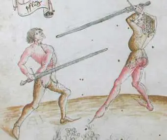
![[59] The first guard is called the ox](../img/liechtenauer/thumbs/002.webp)
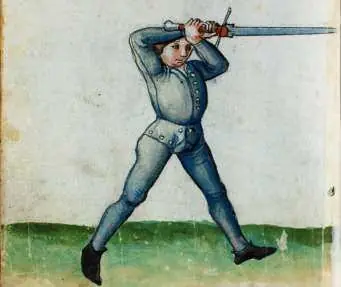
Pflug Saban
Hilt bel/kalça hizasında, point rakibin göğsüne ya da yüzüne.
3Zettel 96–97 (Hängen): “İki asılı, tek elden ve yerden gelir. Her işte: vuruş, thrust, guard; yumuşak ya da sert.”
Nasıl durulur. Sol ayak önde, kılıcı çapraz ellerle tut, pommel aşağıda sağ kalçanda, short edge üstte, point rakibin yüzüne. Sol tarafta sağ ayak önde, pommel sol kalçada, long edge üstte.
Alt asılılarla bağı. Hängen bölümüne göre “yerden iki asılı”, iki yandaki Pflug'dur. Bu guard'dan çalışırken bind'da rakibin yumuşak mı sert mi olduğunu hissetmen (Fühlen) gerekir.
Neyle kırılır. Pflug'u Schielhau kırar. Absetzen de çoğunlukla Pflug'dan yapılır: sol yanına opening ver, thrust yaparsa short edge'le kılıcına wind et ve aynı anda thrust yap.
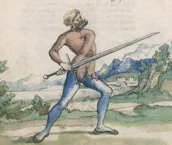
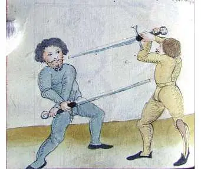
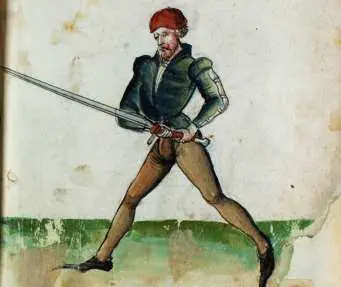
Alber Ahmak
Kollar uzanmış, point yere doğru indirilmiş davetkâr guard.
3Üçüncü kaynak: “Alber, vurulanı ve thrust'ı kırar. Asılılarla da savuruşları kır; ardından hemen Nachreisen gelmeli.”
Nasıl durulur. Sağ ayak önde, kollar uzanmış, kılıcın point'i önünde yere doğru.
Neyle kırılır. Alber'i Scheitelhau (tepe cut'ı) kırar.
Alber'den çalışma. Abschneiden bölümüne göre Alber'de beklerken rakip kılıcını seninkinin üstüne düşürürse altta kal ve short edge'le güçlü kaldır. Sert bastırırsa bıçağının altından sıyırıp diğer taraftan ağzına vur.
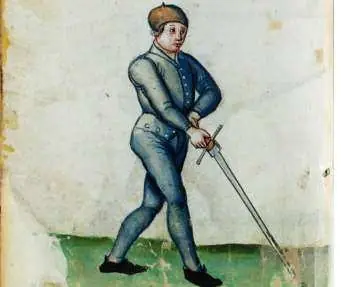
![[90] The third guard: Fool](../img/liechtenauer/thumbs/008.webp)
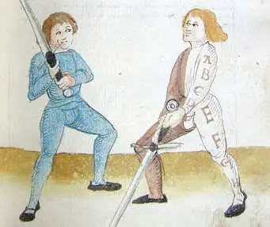
Vom Tag Çatıdan
Kılıç omuzda ya da başın üstünde, yukarıdan vuruşa hazır.
3Zettel 49: “Zwerch, Vom Tag'dan geleni alır.”
Nasıl durulur. Sol ayak önde, kılıç sağ omuzda ya da kollar uzanmış hâlde başının üstünde yüksekte tutulur.
Langort ile ilişkisi. Üçüncü kaynak şunu söyler: “Dördüncü guard Vom Tag aynı zamanda uzun point'tir (Langort). Kolları uzatarak kullanan, vuruş ve thrust'larla vurulamaz.”
Neyle kırılır. Vom Tag'ı ve yukarıdan inen tüm vuruşları Zwerchhau kırar. Nachreisen için de iyi bir çıkış noktasıdır: Vom Tag'da dur ve rakibin vuruşu kaldırmasını izle.
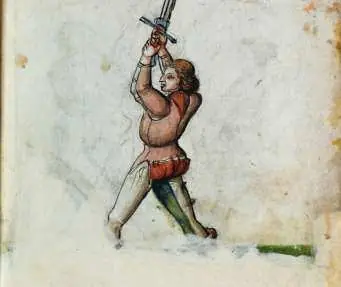
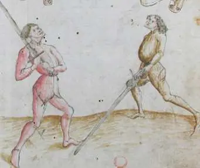
![[62] The fourth guard is called from-the-roof](../img/liechtenauer/thumbs/012.webp)
Schrankhut Bariyer guard'ı
Kılıç çaprazlama yere doğru, yandan savunma guard'ı.
1Gloss: “Krumphau'yu Schrankhut'tan da iki tarafa yapabilirsin.”
Nasıl durulur. Sol ayak önde, kılıç sağ yanında, point yerde, long edge üstte. Böylece sol yanına bir opening verirsin. Sol tarafta sağ ayak önde, kılıç sol yanında çapraz ellerle tutulur ve short edge üstte olur.
Nasıl kullanılır. Rakip opening'e vurursa sağ ayakla sağa geniş sıçra ve çapraz ellerle long edge'le ellerine vur, point ellerinin üstüne gelsin. Sol taraftan short edge'le ellerinin üstüne vurursun.
Üçüncü kaynak. Schrankhut point'ten gelir: point hangi yana istersen yere konur ve böylece Absetzen'e hazırlanırsın. Önündeki point'le yapıldığında “kapı”dan (Pforte) da yapılır. Biri vurur ya da thrust yaparsa Absetzen ile yukarı çıkarken point'ini yakala ve ayaklarına ya da en iyi isabet eden yere vur.
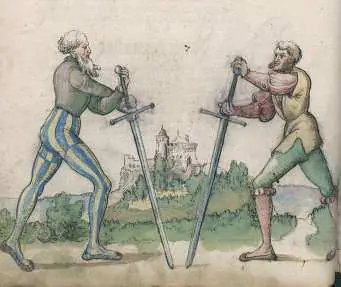
Halbschwert guard'ları Zırhlı half-sword guard'ları
Kısa kılıç (Kampffechten) bölümündeki dört guard: 1., 2., 3. ve 4. guard.
4Zırhlı dövüşte (Kampffechten) kılıç half-sword tutulur: sağ el grip'te, sol el bıçağın ortasında.
1. guard (yüksek). Sol ayak önde, kılıç sağ yanında başının üstünde, point rakibin yüzüne asılı. Rakip alçak guard'dan alttan thrust yaparsa parry yapma, yüzüne thrust yap; Kampffechten'e göre tüm yüksek saldırılar alçak olanları yener.
2. guard (alçak). Sol ayak önde, kılıç sağ yanında aşağıda, pommel sağ dizine dayalı, point rakibin yüzüne ya da göğsüne.
3. guard. Sol ayak önde, kılıç sol dizinin üstünden çaprazlama tutulur. Bu guard'dan rakibin oyunları parry ile kırılır.
4. guard. Hilt sağ koltuk altında, crossguard göğse dayalı, point rakibe. Bu guard'a diğer guard'lardan saldırarak gelinir: thrust zırhın açıklığına girince hilt'i hemen göğsüne dayayıp rakibi önünden it, point'ten kurtulmasına izin verme.
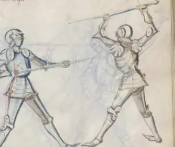
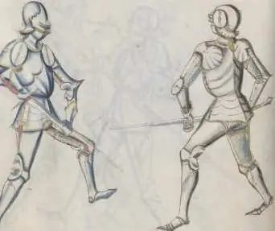
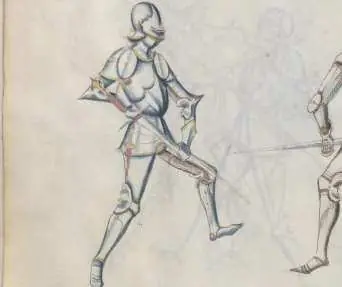
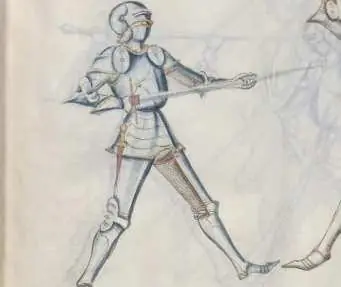
IIMeisterhäue (usta cut'lar) 37 çizim
Zornhau Öfke cut'ı
Omuzdan atılan güçlü Oberhau; Liechtenauer'in ilk usta cut'ı.
8Zettel 27–29: “Sana yukarıdan kim vurursa, Zornhau'nun point'i onu tehdit eder. Fark ederse, tehlikesizce üstten al. Karşısında daha güçlü ol, wind et, thrust yap. Görürse, aşağı al.”
Ne? Omuzdan atılan bir Oberhau'dur. Gloss onu “basit bir köylü vuruşu” diye anar, ama yukarıdan gelen tüm vuruşları point'le kırar. Üçüncü kaynağa göre öfkelenen birine hiçbir vuruş Zornhau kadar hazır gelmez.
Nasıl yapılır. Rakip sağdan başına vurursa sen de sağdan, parry yapmadan, öfkeyle onun kılıcına vur. Bind'da yumuşaksa (weich) uzun point'i dümdüz yüzüne ya da göğsüne sal.
Abnehmen. Point'i fark edip güçlü parry yaparsa ve kılıcını kenara iterse kılıcını onun bıçağından üstten çek, diğer taraftan başına vur.
Winden. Bind'da güçlü kalırsa sen de güçlü kal. Kollarını kaldırıp wind et ve point'i yüzüne thrust et. Bunu da görürse aşağı opening'e geç.
Karşılıkları. Rakip Abnehmen yaparsa üstten long edge'le güçlü bind'a gir ve başına git. Ya da short edge'le kılıcına biraz wind edip long edge'le başına vur, ya da vuruştan yana çıkıp en yakın opening'e çalış.
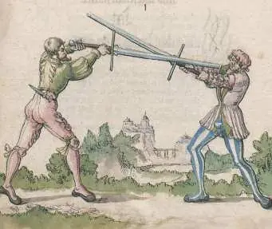
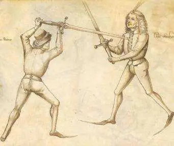
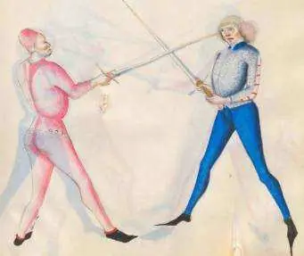
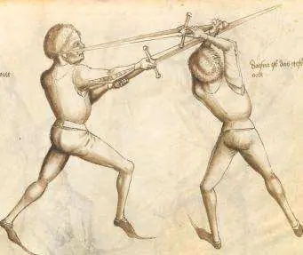
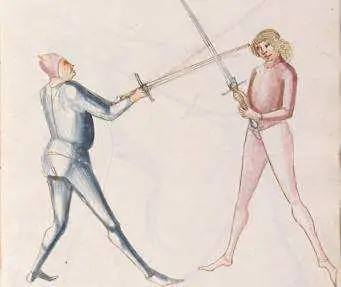
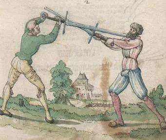
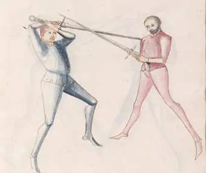
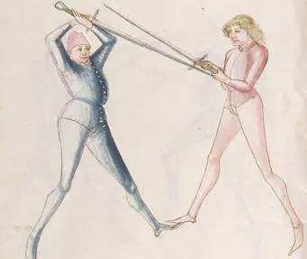
Krumphau Eğri cut
Çapraz adımla ellere/kılıca inen eğri cut; Ochs'u kırar.
5Zettel 42–45: “Çevikçe eğri vur, point'i ellere at. Krump'u adımla iyi koyan çok vuruşu bozar. Ustaları zayıflatmak istersen flat'lerine eğri vur. Yukarıda çaktığında kenara çekil; bunu övüyorum.”
Ne? Yana iyi bir adımla eğri atılan bir Oberhau'dur. Dört Versetzen'den biridir: Ochs'u ve ayrıca Oberhau ile Unterhau'yu kırar.
Nasıl yapılır. Rakip sol tarafında Ochs'ta durursa sol ayağını öne al, kılıcı sağ omzunda tut. Sağ ayakla sağına geniş sıçra ve çapraz kollarla long edge'le ellerinin üstüne vur, point'i hilt'inin üstünden ellerine at.
Yana alma. Sağdan yukarıdan opening'ine cut atarsa sağ ayakla sol yanına adım at, kılıcını onunkinin üstüne koy, point'in yerde Schrankhut'ta kalsın. Bu iki tarafa da yapılır ve buradan başına vurulabilir.
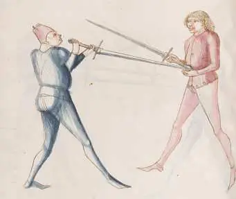
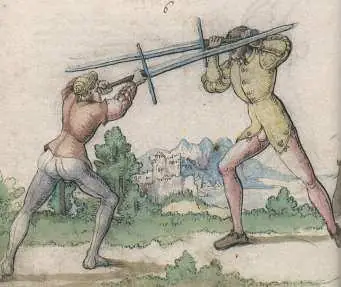
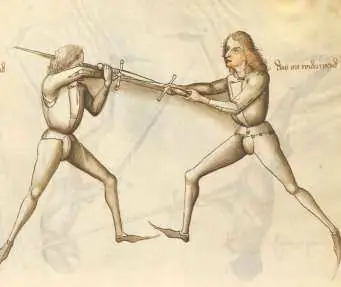
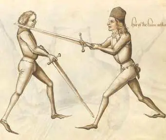
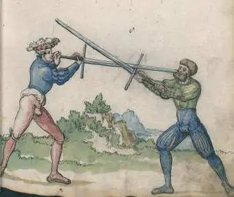
Zwerchhau Çapraz (yatay) cut
Hilt başın üstünde, yatay gelen cut; Vom Tag'ı kırar. Bruch (counter) çizimleri de dahil.
13Zettel 49–52: “Zwerch, Vom Tag'dan geleni alır. Strong'la zwerch'le, işini bununla yap. Pflug'a zwerch, Ochs'a sert bind'a gir. İyi zwerch'lediğinde sıçrayışla başına zarar verirsin.”
Ne? Üçüncü kaynağa göre kılıçla yapılan hiçbir vuruş Zwerchhau kadar adil, güçlü ve iyi değildir. Her iki edge'le, iki taraftan, yukarı ve aşağı tüm opening'lere vurulur. Vom Tag'dan ve yukarıdan gelen her şeyi savar.
Nasıl yapılır. Sol ayak önde, kılıç sağ omuzda. Rakip yukarıdan vurmakla tehdit ederse Vor'u al: sağ ayakla sağa iyi sıçra. Sıçrarken kılıcı hilt başının önünde olacak şekilde çevir, başparmağın alta gelsin, short edge'le sol başına vur. Böylece onun cut'ını hilt'inde yakalar ve aynı anda başına vurursun.
Dört opening'e. Pflug alt opening'ler, Ochs üst opening'ler demektir. Zwerch ile dört opening'in hepsine çalışılır.
Yorum. Hayatı için dövüşen biri ilk vuruşu (Vorschlag) iyi bir Zwerchhau ile almalıdır: ulaşabileceği an sağ üstten short edge'le doğrudan başa, point'i bir kayış gibi rakibin kılıcının etrafına dolayarak.
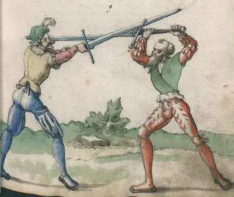
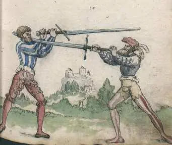
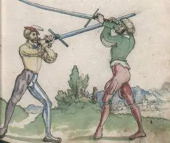
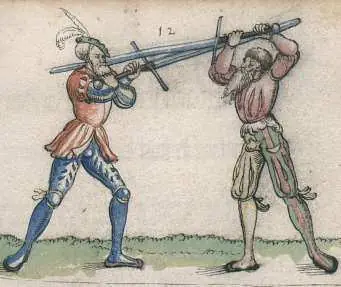
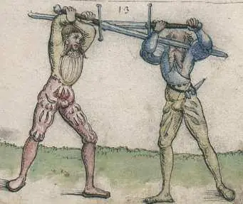
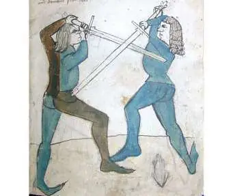
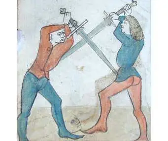
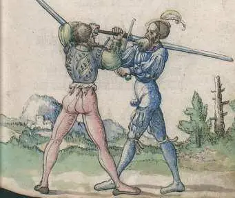
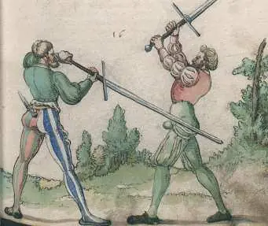
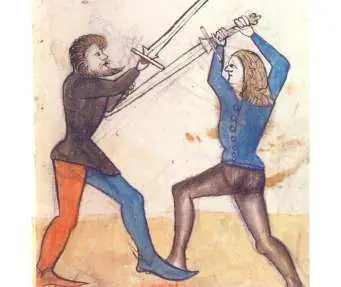
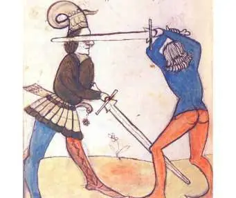
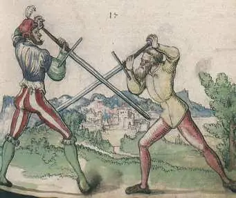
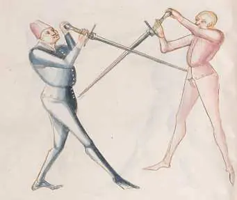
Schielhau Şaşı cut
Short edge'le atılan cut; Pflug'u ve Langort'u kırar.
8Zettel 58–62: “Schieler, Büffel'in (kaba güçle dövüşenin) vurduğunu ya da thrust'ını kırar. Değiştirmekle tehdit edeni Schieler soyar. Kısa kalırsa şaşı bak, Durchwechseln onu yener. Point'e şaşı vur, boğazı korkusuzca al. Üst başa şaşı vur, ellere zarar vermek istersen.”
Ne? Sağ üstten kılıcın short edge'iyle atılan bir vuruş. Şaşı biri gibi sola bakarken sağa adım atılır, kılıç ve el ters çevrilir. Pflug'u ve Langort'u kırar. Gloss'a göre birçok usta bu vuruştan habersizdir.
Nasıl yapılır. Sol ayak önde, kılıç sağ omuzda. Başına yukarıdan vurursa kılıcı çevir ve onun vuruşuna karşı short edge'le, kollar uzanmış hâlde, kılıcının üstünden başına uzun vur. Böylece parry ve vuruş tek harekettir.
Pflug'a karşı. Rakip Pflug'da durup alttan thrust yapmak isterse uzun bir Schielhau ile içeri gir ve point'i uzun göğsüne sal; alttan sana ulaşamaz.
Durchwechseln'e karşı. Rakip altından geçmeye kalkarsa point'i uzun önüne bırak, geçemesin.
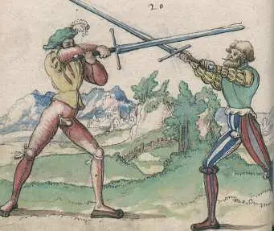
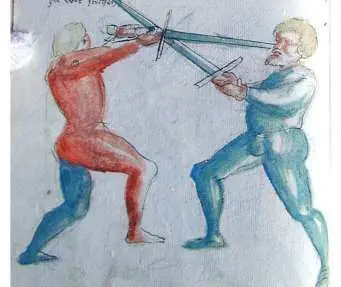
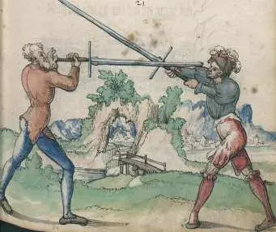
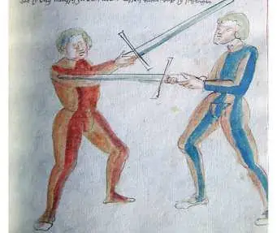
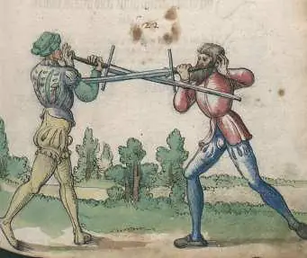
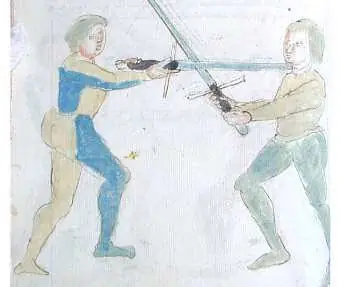
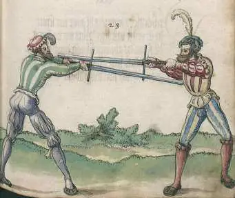
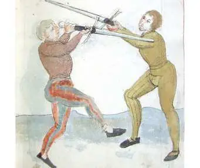
Scheitelhau Tepe cut'ı
Tepeden dikey cut; Alber'i kırar. Krone (taç) ve slice'la yapılan counter'ları dahil.
3Zettel 63–67: “Scheitler yüze tehlikelidir; dönüşüyle göğse de. Ondan geleni Krone alır. Krone'yi slice'la kes, böylece sertçe kırarsın. Vuruşa bastır, slice'larla çekil.”
Ne? Tepeden dikey cut. Alber'i kırar ve dönüşüyle yüze ve göğse çok tehlikelidir.
Nasıl yapılır. Rakip Alber'deyse sol ayak önde, kılıç sağ omuzda dur, ona doğru sıçra ve long edge'le yukarıdan güçlü vur. Kolların yüksek kalsın. Parry yaparsa point'i hilt'inin üstünden yüzüne as.
Dönüş. Point'ini hilt'iyle yukarı iterse kılıcını hilt başının önüne gelecek şekilde çevir, başparmak altta olsun, point'i ellerinin altından göğsüne koy.
Krone ve kırılışı. Rakip hilt ve point başının üstünde olacak şekilde parry yaparsa buna Krone denir; bununla içeri koşar. Karşılık olarak kılıcını Krone'nin altından kollarına slice'la wind et ve bastır, sonra slice'la geri çekil.
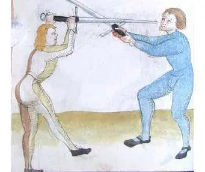
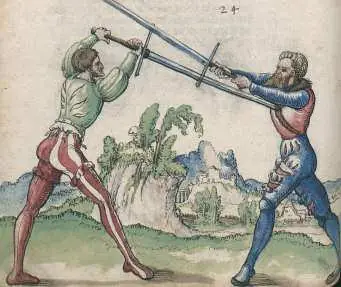
IIITaktik ve teknikler 41 çizim
Vier Blößen Dört opening
Hedef alınacak dört bölge.
2Zettel 36–37: “Dört opening'i bil; onları hedef al, bilerek isabet edersin. Her işte, onun ne yaptığına aldırmadan.”
Ne? Tepeden kasığa dikey bir çizgi ve kemer hizasında yatay bir çizgi düşün. Sağ ve sol üst ile sağ ve sol alt olmak üzere dört opening çıkar. Her birinin kendi tekniği vardır; teknikler kılıca değil hep opening'e gider.
Nasıl aranır. İki yolu var: ön dövüşte (Zufechten) Nachreisen ve uzun point'i salarak; bind'da ise sekiz Winden ile.
Neden önemli. Korkmadan, vuruş ya da thrust'la opening'e git; böylece rakip parry yapmak zorunda kalır. Parry yaptığı anda Winden ile yine en yakın opening'i ara. Kılıca dövüşme, opening'e dövüş.
Duplieren & Mutieren İkileme ve dönüştürme
Bind'dan sonra kılıcın arkasından vurma ya da point'i çevirip thrust yapma.
5Zettel 38–41: “Dört opening'i ustaca kırmak istersen: üstte Duplieren, altta doğru Mutieren yap. Sana doğrusunu söylüyorum: kimse kendini tehlikesizce koruyamaz. Bunu anladıysan, rakip vuruşa pek gelemez.”
Duplieren. Sağdan yukarıdan vur. Rakip parry yapıp kılıçta güçlü kalırsa o anda kollarını kaldır, sol elinle pommel'ı sağ kolunun altından geçir ve çapraz kollarla long edge'le onun bıçağının arkasından başına vur. Soldan bind'da aynı şeyi short edge'le yaparsın.
Mutieren. Parry yapar ama kılıçta yumuşaksa short edge'le kılıcına sol tarafa wind et, kollarını iyice kaldır, bıçağını onun kılıcının üstünden aşırıp alt opening'e thrust yap.
Kural. Rakibin gücüne karşı üst opening'e Duplieren, yumuşaksa alt opening'e Mutieren. Gloss: bu ikisi tüm cut'lardan, kılıçta weak'i ve strong'u buldukça yapılır.
Fehler & Verkehrer Feint ve çevirici
Feint'ler (Fehler) ile dirsek tutup atma içeren Verkehrer oyunları.
7Zettel 53–57: “Fehler yanıltır; alttan dilediğin gibi vur. Verkehrer zorlar; Durchlaufen ile, güreşle de. Dirseği bilerek al, teraziye sıçra. İki kez aldat; biri isabet ederse slice'la devam et. Daha da ikile; sola gir ve tembel olma.”
Fehler. Parry yapmayı seven ve kılıca (bedene değil) dövüşenlere karşı. Serbest bir Oberhau ile başına vuracakmış gibi yap, vuruşu çek ve Zwerch ile sol ya da sağ alt opening'e vur. Hilt'inle başının üstünü koru.
Çifte Fehler. İlk feint'i bir tarafa göster, ikinciyi diğer tarafa, isabet edeni slice'la bitir.
Verkehrer. Eskrimciler buna “yarım vuruş” ya da “çevrik vuruş” der. Ters çevrilmiş long edge'le sağdan yukarı ve aşağı yarım vuruşlar atarak yaklaş. Kılıcına bind'a girdiğinde point'i üstten yüzüne as. Thrust'ı parry edip kollarını yukarı kaldırırsa altından geç (Durchlaufen), dirseğini kavra ve güreşle at.
Vier Versetzen Dört parry
Parry edildiğinde ne yapılacağı; hilt ile kilitleme, half-sword.
8Zettel 70–73: “Dört Versetzen vardır, guard'ları da ağır yaralar. Parry'den sakın; olursa seni çok sıkıştırır. Parry edilirsen, nasıl olursa olsun, öğrettiğimi dinle: sıyırıp çek, çabuk vur.”
Dört Versetzen = dört cut. Krumphau Ochs'u, Zwerchhau Vom Tag'ı, Schielhau Pflug'u, Scheitelhau Alber'i kırar.
Sıradan parry'den sakın. Sıradan eskrimciler point'i yukarıya ya da yana tutarak parry yapar; point'i opening'de tutmayı bilmedikleri için sık vurulurlar. Parry yapacaksan vuruşla ya da thrust'la parry yap ve aynı anda (Indes) point'i en yakın opening'e yönelt. “O vurursa sen de vur, thrust yaparsa sen de yap.”
Parry edildiğinde. Çizimlerdeki karşı oyunlar: pommel'ı rakibin öndeki elinin üstünden geçirip bileğini çekmek, kılıcını yere bastırıp half-sword'la yüzüne thrust yapmak. Rakip kılıcına düşerse pommel'ı onun kılıcının üstünden geçirip başına vurmak (Schnappen).
Ansetzen. Zettel 74: “Dört point'e saldır; bitirmek istersen orada kalmayı öğren.” Ochs ya da Pflug'da dur. Rakip vurmak için kaldırırken ya da thrust için çekerken Vor'u al, uzun point'i en yakın opening'e sal.
Nachreisen & Überlaufen Takip ve üstten aşma
Rakibin hareketinin ardından hemen girmek; alçak hedef alana üstten vurmak.
7Zettel 75–82: “Nachreisen'i öğren, iki türlü, ya da silaha slice'la. İki dış alış; işine başla. Saldırıları yumuşak mı sert mi sına. Fühlen'i öğren; Indes keskin keser. Çifte Nachreisen; biri isabet ederse eski slice'ı yap. Alttan hedef alanı üstten aş; utanır. Yukarıda çaktığında güçlen, bunu överim.”
Nachreisen. Rakip vurmak için kılıcını kaldırırken, cut'ı inmeden önce vuruş, slice ya da thrust'la üst opening'ine git. Ya da long edge'le koluna düş ve onu kendinden it. Thrust için kılıcını çektiği an da peşinden git ve thrust'ını bitirmeden ona thrust yap.
Dış alışlar ve Fühlen. Bind'da rakibin yumuşak mı sert mi olduğunu hisset. Indes sözü burada keskindir: hissettiğin an davran.
Überlaufen. Alt opening'ine vurana karşılık verme, yukarıdan güçlüce başına vur ya da uzun point'i yüzüne ya da göğsüne koy. Gloss: tüm üst saldırılar alttakileri kırar. Yukarıda bind'a girerse long edge'le güçlü kal ve en yakın opening'e çalış.
Absetzen Saptırma
Gelen cut ve thrust'ları point'le saptırıp aynı anda thrust yapmak.
4Zettel 83–85: “Absetzen'i öğren; vuruşları ve thrust'ları ustaca boz. Sana kim thrust yaparsa, senin point'in isabet eder, onunki kırılır. İki taraftan, adım atacaksan her seferinde vur.”
Nasıl yapılır. Rakip thrust yapacakmış gibi duruyorsa sol ayak önde, sağ tarafta Pflug'da dur ve sol yanına opening ver. O opening'e thrust yaparsa short edge'le kılıcına wind et ve kılıcın sol yanında kalsın. Böylece thrust'ı saptırırsın. Aynı anda sağ ayakla adım atıp yüzüne ya da göğsüne thrust yap.
Yukarıdan gelen vuruşa. Sağ Pflug'da dururken sol başına vurursa kılıcı kaldır, hilt başının önünde olacak şekilde vuruşuna karşı wind et, sağ ayakla adım at ve yüzüne ya da göğsüne thrust yap. Bu iki taraftan da yapılır.
Özü. Parry ve saldırı tek harekettir: onun point'i saparken seninki isabet eder.
Durchwechseln & Zucken İçinden geçiş ve geri çekme
Bind'dan önce point'i alttan geçirmek ya da kılıcı çekip yeniden vurmak.
4Zettel 86–90: “Durchwechseln'i iki taraftan öğren, thrust'larla sert. Sana kim bind'a girerse Durchwechseln onu çabuk bulur. Bind'da yakın adım at; Zucken iyi fırsat verir. Çek; isabet ederse daha çek. Ustaları aldatmak istersen tüm isabetlerde çek.”
Durchwechseln. Kolay parry yapan ve kılıca vuran eskrimcilere karşı. Yukarıdan güçlü vur. Rakip senin kılıcına vurursa, bind'dan önce point'i onun kılıcının altından geçir ve diğer taraftan göğsüne thrust yap. Thrust'ı görüp parry yaparsa yine geç. Bunu dikkatle yap ki geçerken sana point koyamasın.
Zucken. Sert bind'a girip hareketsiz bekleyen, senin çekilmeni kollayan ustalara karşı. Sağdan başına güçlü vur. Parry için kılıcını öne sürerse, bind'dan önce kılıcını kendine çek ve diğer taraftan thrust yap. Bind'a girerse yakın adım at, kılıcını üstten çek ve diğer taraftan başına vur. Yine parry yaparsa Duplieren ya da başka oyunlarla üst opening'lere devam et.
Abschneiden Kesip alma
Ellere ve kollara slice (Schnitt).
3Zettel 93–95: “Sertleri alttan, iki yönde kes. Dört slice vardır: ikisi alttan, ikisi üstten. Edge'ini çevir; kurtulmak için elleri bastır.”
Abschneiden. Unterhau ile gelirken ya da Alber'de beklerken rakip kılıcını seninkinin üstüne düşürürse altta kal ve short edge'le güçlü kaldır. Sertçe bastırırsa bıçağının altından sıyrıl ve diğer taraftan ağzına vur.
Schnappen. Hilt'in yakınına düşüp point'i sağına giderse pommel'ı çabucak kılıcının üstünden geçir ve long edge'le başına vur. Point'i soluna giderse short edge'le vur.
Dört slice. İki üst slice, parry yapmadan Zwerch ile öbür tarafa dönenlere karşıdır: iki kolunun üstüne long edge'le düşüp bastır. İki alt slice, kollarını kaldırıp içeri koşanların (Einlaufen) kollarınadır.
Hende drücken. Alt slice'tan üst slice'a geçmek. İçeri koşanın koluna, pommel'ının altından long edge'le düş ve yukarı bastır. Sağına adım atarken pommel'ı alttan geçir, kılıcı kolundan ayırmadan long edge'le kollarının üstüne çevir ve kendinden it.
Hängen / Sprechfenster Asılı guard ve konuşan pencere
Bind'da kalıp rakibi okumak.
1Zettel 96–99: “İki asılı tek elden, yerden gelir. Her işte: vuruş, thrust, guard; yumuşak ya da sert. Sprechfenster yap; serbestçe dur, ne yaptığını araştır. Öyle vur ki sıçrasın; senden önce çekilenden…”
Hängen. Yerden iki asılı, iki yandaki Pflug'dur. Alttan bind'a girildiğinde pommel'ını yere doğru as ve asılıdan yüzüne thrust yap. Point'ini yukarı iterse kılıçta kal, onunla yukarı çık ve point'i yukarıdan yüzüne as. Asılılarda vuruş, thrust ve slice'ı hızla uygula; bind'da yumuşak mı sert mi olduğunu yokla. Dört Winden ve her birinden bir vuruş, thrust, slice buradan yapılır.
Sprechfenster. “Konuşan pencere”: uzun point'le bind'da kal, serbestçe dur ve rakibin ne yapacağını oku. Kılıçtan çekilirse vurursun; kimse kendini tehlikesizce koruyamaz.
IVRingen ve Schwertnehmen 10 çizim
Durchlaufen & Ringen am Schwert Altından geçme ve kılıçlı güreş
Yakın mesafede kol kilitleri, atışlar ve kalçadan savurma.
8Zettel 91–92: “İçinden koş, pommel'la asılı bırak; güreşmek istersen kavra. Sana karşı güçlü olanı Durchlaufen ile işaretle.”
İki türü vardır. Beden güreşi ve kol güreşi. İçeri koşmayı seven eskrimcilere karşı kullanılır.
Beden güreşi. Rakip kollarını yukarı kaldırıp güçle yukarıdan bastırırsa sen de kollarını kaldır. Kılıcını sol elinle pommel'dan başının üstünde tut, bıçak sırtına doğru sarksın. Başınla sağ kolunun altından geç, sağ ayakla sağ ayağının arkasına sıçra. Sağ kolunu belinin önünden dola, sağ kalçana al ve önüne at.
Kol güreşi. Kılıcını bırak, sağ elini ters çevirip sağ elini dışarıdan kavra, sol elinle sağ dirseğini tut. Sol ayakla sağ ayağının önüne sıçra ve kolunu kaldır. Kolu kırabilir ya da bacağının üstünden atabilirsin.
Schwertnehmen Kılıç alma
Rakibin kılıcını elinden almak.
2Durchlaufen bölümünün kılıç alma oyunları.
İçeri koşan rakibe. Sol elini ters çevir, sağ kolunun üstünden geç ve kılıcını iki elinin arasından grip'ten kavra. Sol yanına bastır; kılıcı ondan alırsın.
Bind'da. Parry yapar ya da kılıcına bind'a girerse iki kılıcı ortadan, bıçaklardan sol elinle kavra ve sıkı tut. Sağ elinle pommel'ı alttan iki elinin önünden geçir, sağına yukarı bastır. İki kılıç sende kalır.
VKampffechten (zırhlı dövüş) 33 çizim
Atlı ve mızrak oyunları Ross / Spieß
Attan inmiş savaşçının atlıya karşı mızrakla oyunları.
7Kampffechten girişi: “Burada atlı ve yaya ciddi dövüş başlar; Liechtenauer'in zırhlı eskrimi.”
Attan indin, o inmedi. Sol ayak önde, mızrağını sağ yanında yere dik tut, point'i ona dönük. Hangi taraftan gelirse o tarafa dön ve mızrağınla onunkini saptır.
Kılıçla gelen atlıya. Yayayken atlı kılıçla üzerine gelirse mızrakla opening'lerine thrust yap ve bekle.
Atı devirmek. Mızrağı en uzak ucundan, point'i yere doğru önünde tut. At yaklaşınca mızrağı ön bacaklarının arasına sok, yana sıçra ve atı devirmeyi dene.
Mızrağa karşı kılıç Spieß gegen Schwert
Kılıçla mızrağı saptırma, sol elle parry.
3Zettel: “Sol elden uzun vur, akıllıca sıçra ve bak, zarardan kaçınmak istiyor mu; vur ki opening'leri kılıcın point'iyle taciz edilsin.”
Kılıç sende, mızrak onda. Mızrağı kısa tutup alçak guard'da durursa sen de alçak guard'da dur. Alttan thrust yaparsa thrust'ı kılıçla, sol elin önde olacak şekilde saptır. Pommel'ı sağ omzunun üstünden boynuna geçir, sağ ayakla sol ayağının arkasına sıçra ve pommel'la sağ dizinin üstünden çek.
Sol elle parry. Mızrağı sol elle yana iterek gir ve kılıcın point'ini opening'lerine yönelt.
Zırhlı güreş ve yere bastırma Kampfringen / Unterhalten
Zırhta güreş, yere düşürme, bastırma ve kol kırma; hançerle bitiriş.
6Zettel: “Güreşeceksen bacağın arkasına sıçramayı doğru öğren; atmadan önce tuzak kur, ön bacağı ustaca kilitle.”
Temel. Her şeyden önce onun öndeki ayağının arkasına doğru sıçramayı ve o ayağı kilitlemeyi bil.
Atış. Güreşe girince bir ayağı önde mi diye bak. Adım atması için onu kendine çek ya da it. Sol ayakla öne gelirse sağ ayakla sol ayağının arkasına sıçra ve sağ diz kapağınla sol diz arkasına vur.
Mordstoß. Kollarından kavradığında ayağını düz uzatıp sağlam durursa o dizine tekme at ve bacağını kır. Tekme attığın ayağı yakalamasına izin verme.
Bastırma ve kol kırma. Yüzüstü düşerse sırtına otur, bir kolunu sırtına bük ve tek elle tut; kalkamaz. Diğer elle dirseğini yukarı kaldırırsan kol kırılır. Sırtüstü düşerse gövdenle yüzüne düş, boynunu kolunun altına kıstır ve kendine yardım etmek için uzattığı kolu diğer elinle çek; böylece hançerle çalışamaz.
![[37] Yet a hold down](../img/liechtenauer/thumbs/119.webp)
![[100] Another (hold down)](../img/liechtenauer/thumbs/121.webp)
Half-sword oyunları Halbschwert-Stücke
Kılıcın ortasından tutularak (half-sword) yapılan thrust'lar, counter'lar, sword taking ve kurtulmalar.
16Zırhlı dövüşün half-sword oyunları: thrust'lar zırhın açıklıklarına (eldiven, koltuk altı, yüz) gider.
Yüksek guard'dan. Rakip alçaktan alttan thrust yaparsa yukarıdan, onun kılıcı ile öndeki elinin arasına thrust yap. Pommel'ı yere bastır, point'ini kılıcının altından geçirip sağ yanına koy. Yüzüne thrust yaparsan ve savuşturursa Zucken ya da Durchwechseln ile diğer tarafa geç.
Alçak guard'dan. Yüksekten yüzüne thrust yaparsa öndeki elinin eldiven açıklığına ya da sol omzunun altına thrust yap.
Üçüncü guard'dan. Yüzüne gelen thrust'ı sol elinin önünde kılıçla sağına saptır ve yüksek guard'a çık. Ya da thrust'ı iki elinin arasında karşıla, pommel'ı öndeki elinin üstünden geçirip aşağı çek.
Kola thrust, kurtulmalar, sword taking. Kılıcı ortadan tuttuğu kolunu eldivenin dışından thrust'la vur, thrust tutunca halkaya doğru yürü; yanını kazanırsın. Sağ omzuna saldırıp sen de onunkine saldırdıysan sol ayakla geri adım at, sol yanını çevir, point'ini kaldır; onunki boşa gider. Alçak guard'dan güçlü thrust yaparken aynı anda thrust yaparsa sol elini ters çevirip kılıcını ortadan kavra, pommel'ı altından geçir ve kılıcını al.
Pommel vuruşu Mordschlag / Knopf
Kılıcı tersten tutup pommel ve crossguard'la vurmak.
1Zettel: “Vuruşla ön ayağı koru.”
Pommel vuruşu. Pommel'la rakibin öne uzattığı uzuvlara vurulur. Kılıcını yüksek guard'da başının üstünde tut ve yüzüne thrust yapacakmış gibi yap. Sağ elinle kılıcı sür, sol elini yardım için bıçağın ortasına getir. Pommel'la kılıcı tuttuğu öndeki elinin parmak eklemlerine vur.
Diğer hedefler. Uygun düştüğünde başa, dirseklere ya da omuzlara da vurulur.
Bu teknikleri Antalya'da çalışıyoruz
Lycian Fighters, Antalya'nın ilk HEMA kulübü. Çalışmalarımızı Instagram'da takip edin.
Joachim Meyer 1570: Uzun Kılıç Atlası
Joachim Meyer'in 1570 tarihli kitabından longsword guard'ları, cut'lar, Handarbeit ve Ringen: 64 gravür görseli ve Türkçe açıklamalar. Lycian Fighters, HEMA Antalya.
Fiore dei Liberi: Fior di Battaglia Atlası
Fiore dei Liberi'nin Fior di Battaglia'sından 310 Getty çizimi: Abrazare, Daga, Spada'nın 12 guard'ı, Zogho Largo ve Stretto, zırhlı dövüş, Azza, Lanza ve atlı dövüş; Türkçe açıklamalarla.